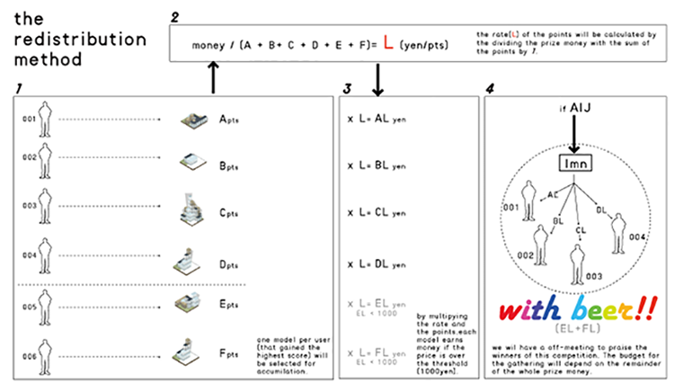

本システム(The Decentralized Version Controlled Building)の中で、建築をつくり最高得点を目指せ！！
このシステムでは、一意に単一のモデルが評価されることが正しいわけではありません。より多くの人へ継承されることと、そして継承されたものが評価されていくことが、 高得点を生み出すポイントです。いわば、未来を想定しながら考えていくことが重要です。 これは、建築に時間軸を呼び戻し、より継続されていく建築とは？という問いに対する挑戦です。
3seconds,30seconds,3minutes,30minutes,3hours, 30hours,3days,30days, 3months, 30months,3years,3decades,...
この仕組みは、ALGODeQ（以下:親コンペ）に際して提案・作成されたシステムです。 期間：6月14日～7月中旬(予定) ※締め切りは親コンペの審査日程公表後、決定します。 賞金：本システムが親コンペにおいて入賞した場合、得られた賞金を分配します。(最大総額100万円) ※親コンペにおいて入賞することができなかった場合、賞金はなしとします。
1. モデルの集計 1ユーザーにつき最も評価ポイントが高かったモデルが選ばれ、そのモデル群の合計ポイントを計算します。これを総ポイントとします。
2. 賞金/総ポイント ここで、得られた賞金と総ポイントで割り算し、1ポイントあたりの金額を算出します。これをポイント換算レートとします。
3. ポイント換算レート*ポイントで1000円以上となったら賞金対象です! 得られた換算レートを下に、ユーザー毎最高得点を獲得したモデルが1000円以上となった場合には、賞金対象となります!
賞金の案内時に登録メールアドレスが送れなかった場合。 賞金の案内時にご返信いただけなかった場合。 その他運営側として不正行為と判断した場合。
